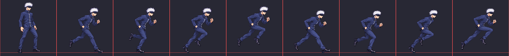
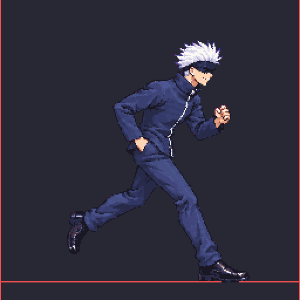
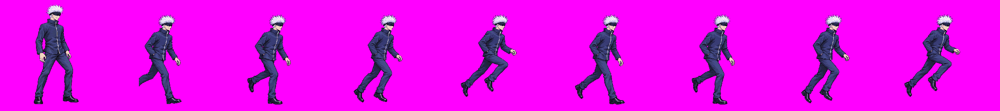
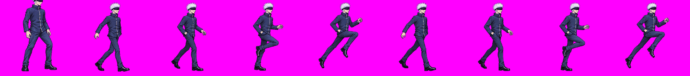
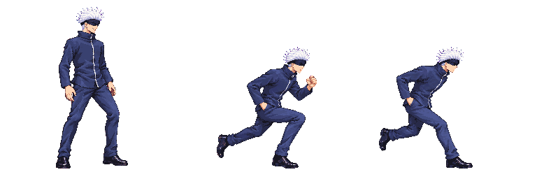

Gojo run direction studies J / K / L
Unapproved direction candidates. Each contact sheet shows approved idle f0 beside run frames 0–7 at one scale. Playback is 60 ms per frame. Compare stride, leg identity, hand placement, and the loop seam. The selected direction will still need a separate production strip and technical review.
Run v13 — production candidate (K direction)
Needs your review; not approved. Part A (f0–f3, left leg forward) plus the held Part B attempt 02 (f4–f7), stitched with no new calls at your request. Packed at Gojo's idle head size (auto-head fit ×0.938, scale gate ok). The packed cells are shown: idle f0 first, then run f0–f7, with the floor at y 240.
Known holds: both halves put the same leg forward (with navy trousers and black shoes on both legs, it is hard to see in motion). The near fist stays forward in every frame, a held-fist look rather than a pumping arm. The second half sits about 10 px lower (more crouched), so there is a small bob each stride. Claude set per-frame offsets so the head holds still (the foot-centre anchor slid the body ~95 px) and lifted the flight frames f3/f7 to their drawn height. No Astra audit has been run on v13.


In game: /?fight=gojo,naruto&mode=solo (hold D to run).
J and L redo — v02
The user favored K and requested new J and L studies. K_v01 is unchanged; J_v02 and L_v02 are new direction studies only. The new contact sheets put approved idle f0 beside each study's eight frames at one scale. The combined loop compares J_v02 / K_v01 / L_v02, at 60 ms per frame.
Both new studies remain on technical hold and unapproved. J_v02 repeats the lead-leg pattern in the second half; its source f0 also touches the left generation-canvas edge, so missing pixels cannot be recovered by normalization. L_v02 repeats the same lead leg at f0/f4 and f3/f7. Each used its full 3/3 call budget.
J_v02 / K_v01 / L_v02 comparison GIF · v02 package measurements and QA · generation provenance and hashes

J — easy long stride v02
contact sheet · GIF · MP4 · normalized strip



K — fast athletic v01, unchanged
contact sheet · GIF · MP4 · normalized strip


L — upright showboat v02
contact sheet · GIF · MP4 · normalized strip



Phase 2 audit result — technical hold
No production strip is review-ready. K is the selected direction only; this is not image approval.
Dash v09 passed the packer scale gate, then independent Astra audit held the actual quantized atlas: slot 17 loses
the near/right arm pump behind the torso, the torso garment axis appears shortened versus approved references, and
the head shifts about 37 px across the loop. The candidate is preserved under raw/_qa_hold/; it has no
remaining generation budget. The atlas shown here is the audited technical hold, not a release candidate.
The contact sheet compares approved idle f0 with packed dash frames 0 and 1 at one scale. Measured pose envelopes are 103×231 px for idle f0, 143×174 px for dash f0, and 134×174 px for dash f1, with soles at y=240. These are posed bounds, not skeleton measurements. Audited dash v09 contact sheet · Quantitative QA record · Attempt/provenance inventory

Run v13 has no image after 3/3 calls failed the mirrored-phase requirement. BackDash v05/v06 and SuperDash v10/v11 are held after exhausted budgets. See the inventory for exact hashes and reasons.


J — Easy long stride
Contact sheet (idle f0 + frames 0–7) · GIF · MP4 · 8 × 256 strip


K — Fast athletic
Contact sheet (idle f0 + frames 0–7) · GIF · MP4 · 8 × 256 strip

L — Upright showboat
Contact sheet (idle f0 + frames 0–7) · GIF · MP4 · 8 × 256 strip